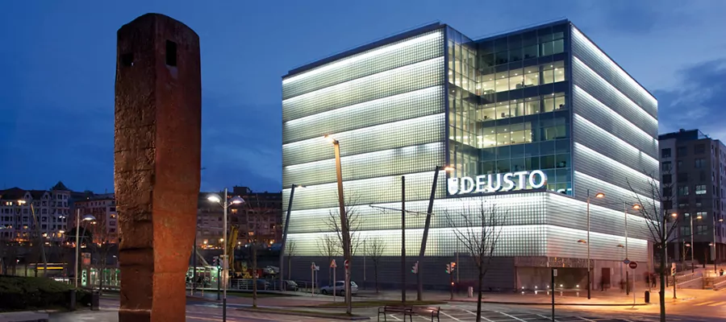
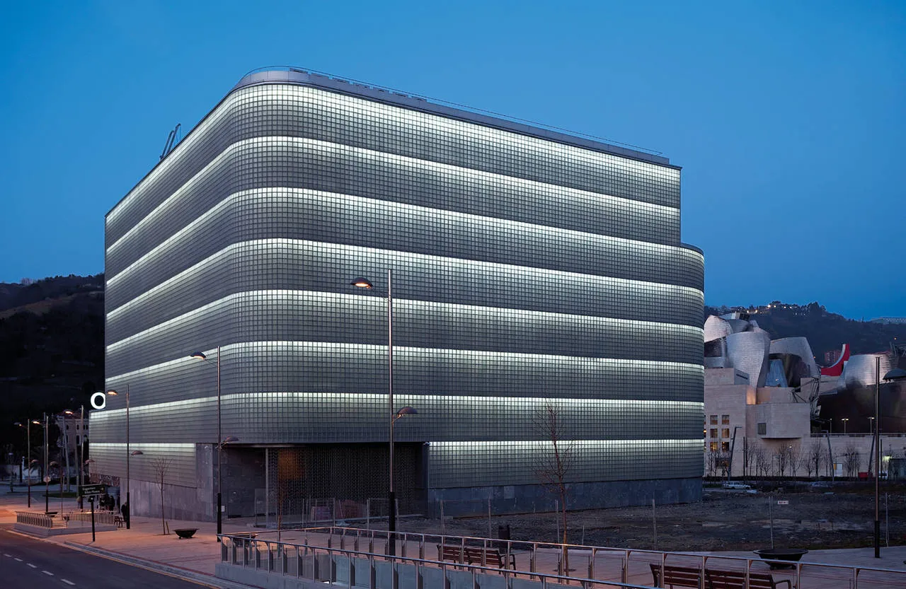

Un Sanctuaire de Connaissances et d'Inspiration


Pôle du Savoir

La Bibliothèque de l'Université de Deusto, créée en 2008, est un véritable sanctuaire du savoir et de la connaissance. Nichée au cœur de l'Université de Deusto, cette bibliothèque emblématique incarne l'essence même de l'apprentissage et de la recherche. Dès son inauguration, elle s'est imposée comme un pilier fondamental de l'établissement, offrant aux étudiants, aux enseignants et aux chercheurs un accès privilégié à une vaste collection de ressources académiques. Avec ses salles spacieuses et ses équipements modernes, cette bibliothèque a été conçue pour stimuler la curiosité intellectuelle et encourager l'exploration du savoir dans tous les domaines d'études.
Trésors de Connaissances
Ses étagères regorgent de livres, de revues spécialisées, de publications académiques et de ressources électroniques, couvrant un large éventail de disciplines. Que ce soit en sciences humaines, en sciences sociales, en sciences exactes ou en arts, les ressources disponibles permettent d'approfondir la compréhension et d'enrichir les recherches. Outre ses précieuses collections, la Bibliothèque de l'Université de Deusto offre un environnement propice à l'étude et à la concentration. Ses espaces de travail, qu'ils soient individuels ou collectifs, offrent calme et confort, favorisant ainsi la réflexion et l'apprentissage.
Outre ses précieuses collections, la Bibliothèque de l'Université de Deusto offre un environnement propice à l'étude et à la concentration. Ses espaces de travail, qu'ils soient individuels ou collectifs, offrent calme et confort, favorisant ainsi la réflexion et l'apprentissage.